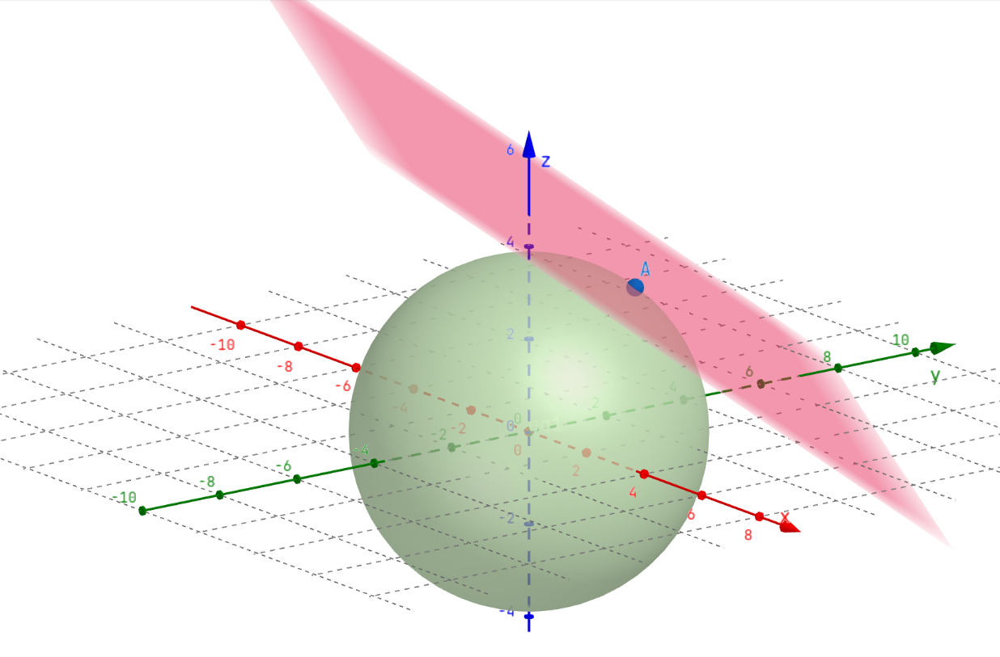

10 Derivadas em múltiplas dimensões
Quando tratamos de derivadas simples no cálculo univariado, estávamos, como o nome indica, sempre tratando de funções com uma variável. Isto é, a função estava sempre presa a um plano, e era fácil para nós encontrarmos a reta tangente a qualquer um de seus pontos, caso existisse, pela sua derivada.
Contudo, essas funções agora tem muito mais liberdade no cálculo multivariado. No espaço tridimensional que vivemos, por exemplo, as funções podem tomar formas muito além de simples curvas e retas num plano. Sendo assim, não podemos encontrar apenas uma reta tangente a algum ponto dessa função. Na verdade, se diferenciável, podemos encontrar infinitas retas tangentes num ponto, uma vez que, em funções desse tipo, pontos possuem um plano tangente:

Observe que o plano representa todas as retas tangentes ao ponto A.
Dessa forma, diferente de como pensamos no cálculo univariado, agora as derivadas não representam um coeficiente angular duma reta tangente, mas sim nos dão informações sobre o plano tangente ao ponto.
10.1 Derivadas Direcionais
Uma das formas de usar essa informação é através da derivada direcional. De maneira bem simples, como agora temos infinitas retas tangentes a um ponto, podemos escolher uma direção e observar a derivada das retas nessa direção. Isso nada mais é que analisar a derivada na direção do vetor diretor dessas retas.
Vamos nos lembrar da definição de derivada de uma função \(f\) num ponto \(x\) no cálculo univariado: \[ f'(x) = \lim_{h\rightarrow 0} \frac{f(x+h)-f(x)}{h} \]
Essa definição se estende para mais dimensões ao escolhermos uma direção para avaliar essa derivada. Chamaremos essa direção de \(y\), um vetor. Temos assim derivada duma função \(f\) na direção de \(y\) do ponto \(x\) \[ f'(\pmb{x};\pmb{y}) = \lim_{h\rightarrow 0} \frac{f(\pmb{x}+h\pmb{y})-f(\pmb{x})}{h} \]
Temos quase a definição de nossa derivada parcial, mas ainda existe um problema na nossa fórmula acima: por mais que ela meça a taxa de variação de \(\pmb{x}\) na direção do vetor \(\pmb{y}\), ela não nos dá necessariamente, em termos de escala, uma boa medida.
Isso acontece pois o vetor \(\pmb{y}\) pode não ser unitário, ou seja, sua norma, \(\lVert \pmb{y} \rVert\) pode ser diferente de 1. Dessa forma, nos convém sempre normalizar o vetor que direciona esse tipo de derivada. Vamos chamar esse \(\pmb{y}\) normado de \(\pmb{v}\), também conhecido como versor de \(\pmb{y}\): \[ \pmb{v} = \frac{\pmb{y}}{\lVert \pmb{y} \rVert} \Rightarrow \lVert \pmb{v} \rVert = 1 \]
Com isso, temos a definição da derivada direcional de \(f\) no ponto \(\pmb{p}\) na direção do versor \(\pmb{v}\) de \(\pmb{y}\), denotada por \(D_{\pmb{v}}\rvert_{\pmb{p}}\) \[ f'(\pmb{p};\pmb{v})= D_{\pmb{v}}\rvert_{\pmb{p}} = \lim_{h\rightarrow 0} \frac{f(\pmb{p}+h\pmb{v})-f(\pmb{p})}{h} \]
Vamos botá-la em prática!
10.1.1 Exercício - Derivada direcional
Calcule a derivada parcial de \(f(x,y) = xy\) no ponto \(\pmb{p} = (2,1)\) na direção do vetor \(\pmb{u} = (1,1)\).
Primeiro note que o vetor \(\pmb{u}\) não possui norma 1: \(\sqrt{1^2+1^2}=\sqrt{2}\neq 1\). Podemos norma-lo ao dividi-lo pelo valor que acabamos de calcular: \(\pmb{v} = \left(\frac{1}{\sqrt{2}}, \frac{1}{\sqrt{2}}\right)\). Confira que esse novo vetor tem norma 1.
Podemos agora calcular \(D_{\pmb{u}}\rvert_{\pmb{p}}\). \[ \begin{aligned} D_{\pmb{u}}\rvert_{\pmb{p}} &= \lim_{h \rightarrow 0} \frac{f(\pmb{p} + h\pmb{v})-f(\pmb{p})}{h} \\ &= \lim_{h\rightarrow 0} \frac{f\left(2+\frac{h}{\sqrt{2}},1+\frac{h}{\sqrt{2}}\right)-f(2,1)}{h} \\ & = \lim_{h\rightarrow 0} \frac{\left(2+\frac{h}{\sqrt{2}}\right)\cdot\left(1+\frac{h}{\sqrt{2}}\right) - 2\cdot 1}{h} \\ &= \lim_{h\rightarrow 0} \frac{2 + \frac{3h}{\sqrt{2}} + \frac{h^2}{2} - 2}{h} \\ & = \lim_{h\rightarrow 0} \frac{\frac{3\sqrt{2}h + h^2}{2}}{h} = \lim_{h\rightarrow 0} \frac{3\sqrt{2}h+h^2}{2h}\\ &= \lim_{h\rightarrow 0} \frac{3\sqrt{2} + h}{2} = \frac{3}{2}\sqrt{2} \end{aligned} \]
10.1.2 Derivadas parciais
O que aconteceria se derivássemos uma função na direção de um dos seus eixos? Por exemplo, com a função \(f(x,y) = xy\), poderíamos derivá-la na direção de \(x\) ou \(y\)! Chamamos isso de Derivada parcial.
Vamos testar derivando essa função na direção de \(x\) no ponto \(\pmb{p} = x_0, y_0\) qualquer. Lembre-se que nesse caso \(x\) (por vezes chamado de \(\vec{i}\)) é o primeiro elemento da base canônica de \(\mathbb{R}^2, \{(0,1),(1,0)\}\). Isto é, \(x = (1,0) \Rightarrow \lVert x \rVert = 1\)
\[ \begin{aligned} f'(\pmb{p}; x) = D_{x}\rvert_{\pmb{p}} &= \lim_{h \rightarrow 0} \frac{f(\pmb{p} + hx) - f(\pmb{p})}{h} \\ &= \lim_{h\rightarrow 0} \frac{f(x_0 + 1 \cdot h, y_0 + 0 \cdot h) - f(x_0,y_0)}{h} \\ &= \lim_{h\rightarrow 0} \frac{(x_0+h)\cdot(y_0) - x_{0}y_0}{h} \\ &= \lim_{h\rightarrow 0} \frac{x_0y_0 + y_0h - x_0y_0}{h} \\ &= \lim_{h\rightarrow 0} \frac{y_0h}{h} = \lim_{h\rightarrow 0} y_0 = y_0 \end{aligned} \]
Usando os mesmos argumentos (verifique!), temos que \[ D_{y}\rvert_{\pmb{p}} = x_0 \]
Derivadas parciais recebem este nome pois, como acabamos de verificar, derivamos uma das variáveis enquanto tratamos a outra como uma constante! Para celebrar sua importância, criamos uma notação especial para essas derivadas: \[ \frac{\partial f}{\partial x} = D_x ~~~~ \frac{\partial f}{\partial y} = D_y \] Esse \(d\) estilizado, \(\partial\), carinhosamente chamado de del, indica que estamos realizando uma derivação parcial. Dessa forma, podemos ler a primeira derivada como derivada parcial de \(f\) em relação a \(x\).
Para nos poupar de calcularmos limites, como observamos, podemos na grande maioria dos casos calcular derivadas parciais simplesmente tratando as outras variáveis como constantes:
\[ \begin{aligned} \frac{\partial (x - y)}{\partial y} &= -1 \\ \frac{\partial (x^2y)}{\partial x } &= 2xy \\ \frac{\partial (e^{x^3+2y)}}{\partial y} &= 2 e^{x^3 + 2y} \end{aligned} \]
Essa é uma ferramente poderosa que será um pilar no nosso estudo de cálculo multivariado. Por exemplo, através dela construiremos a seguir uma ferramenta que, além de diversas outras funções, nos permite calcular derivadas direcionais sem sua definição por limites!
10.2 Diferenciabilidade
Assim como no cálculo univariado, nos é relevante saber se uma função é ou não diferenciável.
Da diferenciabilidade, temos que uma função \(f: \mathbb{R} \rightarrow \mathbb{R}\) é diferenciável no ponto \(x_0\) se e somente se existe \(a\) real tal que:
\[ \lim_{h\rightarrow 0 } \frac{f(x_0+h)-f(x_0)}{h} = a \Leftrightarrow \lim_{h\rightarrow 0 } \frac{f(x_0+h) - f(x_0) - ah}{\lvert a \rvert} = 0 \]
Estendendo para mais dimensões, como \(f: \mathbb{R}^2 \rightarrow \mathbb{R}\), temos a definição de diferenciabilidade para funções de duas variáveis:
\(f\) será diferenciável em \((x_0,y_0)\) se e somente se existirem reais \(a, b\) tais que \[ \lim_{(h,k) \rightarrow (0,0)} \frac{f(x_0+h, y_0+k) - f(x_0,y_0) -ah -bk}{\lVert (h,k) \rVert} \]
Esses valores \(a\) e \(b\) são extremamente interessantes - São valores extremamente fáceis de encontrar! É fácil ver o porquê:
Vamos fixar o valor de \(k\) dentro do limite como \(0\):
\[ \begin{aligned} \lim_{(h,k) \rightarrow (0,0)} &\frac{f(x_0+h, y_0) - f(x_0,y_0) - ah}{\lVert (h,0) \rVert} \\ &= \lim_{h \rightarrow 0} \frac{f(x_0+h,y_0) - f(x_0,y_0)}{h} \\ &= a \\ &= \frac{\partial f}{\partial x} (x_0,y_0) \end{aligned} \]
Ou seja, o valor de \(a\) é simplesmente a derivada parcial de \(f\) em relação a \(x\) e, analogamente, o de \(b\) a de \(f\) em relação a \(y\), ambos calculados no ponto \(\pmb{p} = (x_0,y_0)\)
Dessa forma, temos uma condição para diferenciabilidade de funções de várias variáveis:
Uma função \(f\) é diferenciável em um ponto \(\pmb{p}\) se, e somente se, admite derivadas parciais nesse ponto e o limite abaixo existe.
\[ \lim_{(h,k) \rightarrow (0,0)} \frac{f(\pmb{p} + (h,k)) - f(\pmb{p}) - D_x\rvert{\pmb{p}} - D_y\rvert{\pmb{p}}}{\lVert (h,k) \rVert} \]
Ainda assim, cacular esse limite é bem chato. Felizmente, manipulando esses limites (GUIDORIZZI (2018)) conseguimos um resultado muito útil:
10.2.1 Condição suficiente para diferenciabilidade
Para que uma função \(f\) seja diferenciável em um ponto \(\pmb{p}\), basta que admita derivadas parciais contínuas nesse ponto.
10.3 Gradiente
Conseguimos vários conceitos sobre as derivadas em mais dimensões. Observamos o que significa derivar em uma determinada direção, o que acontece quando derivamos na direção de um dos eixos e o que significa ser diferenciável. Mas, afinal, se temos uma função \(f : \mathbb{R}^2 \rightarrow \mathbb{R}\), o que significa a “derivada da \(f\)” ou “\(f'\)”?
Quando dizemos “derivada da função \(f\)”, normalmente nos referimos ao gradiente dessa função, um vetor que conteḿ as derivadas parciais dela no ponto. Por exemplo, o gradiente da função \(f\) no ponto \((x,y)\) é dado por \[ \nabla f(x,y) = \left(\frac{\partial f}{\partial x}, \frac{\partial f}{\partial y}\right) \]
Adaptando ao sistema de coordenadas \(\hat{\imath}, \hat{\jmath}\), numa notação vetorial, teríamos que \[ \vec{\nabla} f(x,y) = \frac{\partial f}{\partial x} \hat{\imath} + \frac{\partial f}{\partial y} \hat{j} \]
Nesse livro, optamos por não utilizar a notação vetorial, mas pode ser que você a encontre especialmente em cursos de física!
Na função simples \(f(x,y) = x^2y^2\) teríamos, portanto, \(\nabla f(x,y) = (2xy^2, 2x^2y)\).
Podemos interpretar o gradiente geometricamente como um vetor aplicado a um ponto \(\pmb{p}\). Acontece que, como veremos quando abordamos a regra da cadeia, esse é um vetor perpendicular ao ponto \(\pmb{p}\), ou, como chamado na física, normal à curva de nível nesse ponto.
Algo muito útil dessa propriedade é que, como é perpendicular ao ponto \(\pmb{p}\), é também perpendicular à reta tangente que passa por esse ponto. Com isso, temos a equação da reta tangente \[ \nabla f (\pmb{p}) \cdot [(x,y) - \pmb{p}] = 0 \]
Conseguimos estender isso para um plano tangente quando tratamos de três variáveis \[ \nabla f (\pmb{p}) \cdot [(x,y,z) - \pmb{p}] = 0 \]
E encontrar a reta normal à essa superfície de nível de \(f(x,y,z)\) \[ (x,y,z) = \pmb{p} + \lambda \nabla f (\pmb{p}), \lambda \in \mathbb{R} \]
Com esse recurso, conseguimos calcular quase qualquer derivada direcional através dessa relação: \[ f'(\pmb{p}; \pmb{v}) = D_{\pmb{v}} \rvert_{\pmb{p}} = \nabla f (\pmb{p}) \cdot \pmb{v} \] Ou seja, o produto interno entre o gradiente de \(f\) calculado no ponto \(\pmb{p}\) e o versor da direção \(\pmb{v}\).
Vamos testar com um exempo que já fizemos quando calculamos a derivada direcional de \(f(x,y) = xy\) no ponto \(\pmb{p} = (2,1)\) na direção de \(\pmb{u} = (1,1)\).
Lembrando que precisamos normalizar esse vetor! \[ \pmb{v} = \frac{\pmb{u}}{\lVert \pmb{u} \rVert} = \left(\frac{1}{\sqrt{2}}, \frac{1}{\sqrt{2}}\right) \] Calculando o gradiente, temos: \[ \nabla f(\pmb{p}) = (1,2) \] Finalmente, \[ D_{\pmb{u}}\rvert_{\pmb{p}} = (1,2) \cdot \pmb{v} = \frac{1}{\sqrt{2}}+\frac{2}{\sqrt{2}} = \frac{3}{\sqrt{2}} = \frac{3}{2} \sqrt{2} \] O que confere com nosso resultado anterior